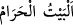
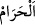

ve düşmanlık etmekten ve nifak çıkarmaktan Allah’a sığınırım.” diye duâ edilmesi
emredilmiştir. Şer’an bildirilen dua ve zikirler yardımıyla Kâbe’nin köşelerinin
mertebeleri bilinebilir.
Kâbe’nin üçgen küp şeklinde olmasının sırrına gelince bu, peygamberlerin
(aleyhimü’s-selam) kalplerine işaret etmektedir. Allah Teâlâ başka insanlarla aralarında
bir fark olması için peygamberlerine ismet sıfatı bahşetmiştir. Onun için peygamberlerin
üç havâtırı olur: İlâhî, melekî ve nefsî. Başkalarında ise bunlara ilave olarak bir de
şeytânî hâtır bulunur. Kimi insanlarda bu şeytânî hâtırın hükmü ve tesiri açıktan görülür.
Bunlar avam insanların çoğunu teşkil eder. Bazılarına bu hâtır gelir ama, zâhirine tesiri
olmaz. Bunlar da Allah’ın hıfz ettiği veliler ile; ismet sahibi peygamberleridir. İsmet,
peygamberler hakkında vâcib, hıfz evliya hakkında câizdir.
Kâbe kelimesinden sonra “eI-Beytü’l-harâm” Yani saygıya lâyık ev ifadesinin
zikredilmesi onu açıklamak için değil övmek içindir.
Kâbe’nin “
” olarak isimlendirilmesi, Allah Teâlâ’nın onu harem kılması,
hurmet ve saygınlığını yüceltmesi sebebiyledir. Şu halde buradaki “
” kelimesi
harem ve hürmete layık kılınmış manasınadır. Nitekim bir hadis-i şerifte “Allah Teâlâ
Mekke’yi, gökleri ve yeri yarattığı gün harem kıldı.”[50] buyurulmaktadır.
Bu konuda İbn Melek şunları söyler: Bil ki, Allah Mekke’yi şereflendirdi ve Hz.
İbrâhim (a.s.) da onu harem kıldı. Bunu, sahih olarak bize ulaşan şu hadisten anlıyoruz:
“İbrahim Mekke’yi harem kıldı, ben de Medîne’yi harem kıldım.’’[51] Hz.Peygamber
(a.s.)’ın Allah bu beldeyi, gökleri ve yeri yarattığı gün harem kılmışdı.” hadisinden
maksat, Hz. İbrâhim’in bu beldeyi harem kılacağının Levh-i Mahfûz’da kaydedilmiş
olmasıdır.
Fakir de derim ki: Her ne kadar Mekke’nin arazî haremliği sonradan olsa da, zatî
haremliği kadîmdir. Hakikat bakımından bu husûsun Levh-i Mahfûz’da yazılı oluşu zâti
haremliğinden ileri gelmektedir.
Bazı tefsirlerde “Göğe ve yere, isteyerek ya da istemeyerek (varlığa) gelin, dedi.
Onlar da ‘isteyerek geldik’ dediler.” (Fussilet, 41/11) âyeti açıklanırken şu bilgiye yer
verilir: “Bu âyetteki çağrıya yeryüzünden olumlu cevap veren sadece Harem toprağıdır.
Bundan dolayı Allah Teâlâ o bölgeyi harem ilan etmiştir. Böylece bu bölgenin
haremliği, sanki bir mü’minin hürmeti gibi olmuştur. Nasıl ki Rabb’ine itâat eden bir
mü’minin kanı, ırzı ve malı haram (dokunulmaz) kılınmışsa, aynı şekilde Harem
bölgesinin toprakları da “isteyerek (itâat ederek) geldik” dediği için hem avı, hem
ağacı, hem de otu harem (dokunulmaz) kılınmıştır. Çünkü itâat etmeyenin haremliği
(saygınlık ve dokunulmazlığı) söz konusu olamaz. Nitekim bir haberde belirtildiğine
göre Nuh tûfânında sular altında kalan Harem bölgesinde büyük balıklar, bu mıntıkanın
taşıdığı hürmet nedeniyle, küçük balıkları yutmamışlardır.
Âyette sayılan hususların “insanların ayakta kalmalarına vesile” kılınmasının
mânâsı onların din ve dünyâ işlerinin bir nizam içinde yürüyebilmesi için temel şart